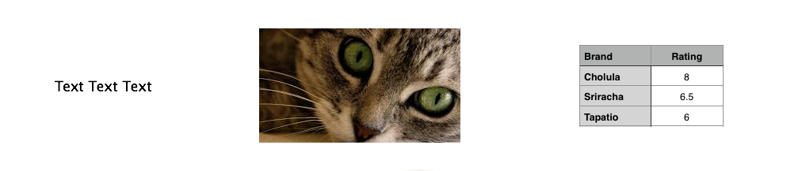
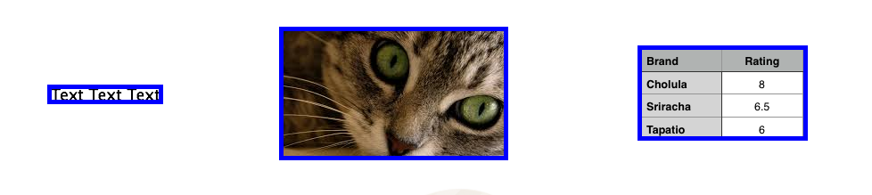
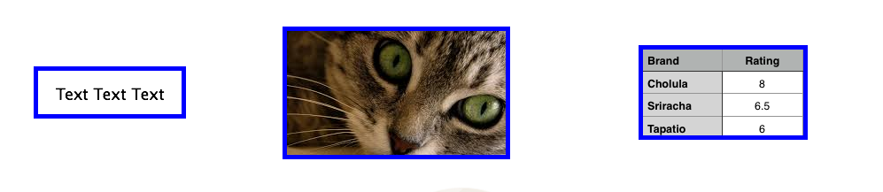
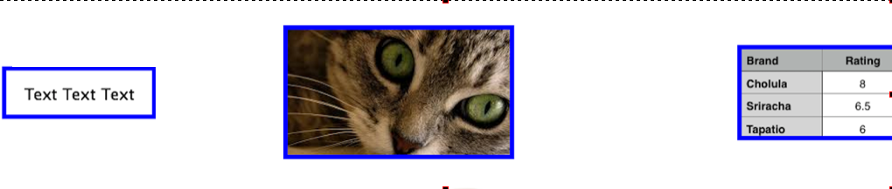

CSS 101: Margins, Borders, & Padding
Date: September 5th, 2014
Every HTML object can be wrapped in 3 layers: margins, borders, and padding. Let's start at the beginning:
- Content: Your text, span, image, list or table is what we'll call your content.

- Border: This one is self-explanatory, right? With the CSS border syntax you can create borders around your content in varying colors, textures, and widths. But the text with a border looks terrble, right? And that's why we have padding.

- Padding: Padding is another customizeable wrapper that fill in the space between your content and border, like so:

- Margin: Margins are the outermost wrapper of your content that sits outside the border. Let's pump up our padding to spread out our items:

- Content-Box Sizing Property:The default in CSS adds padding, borders, and margins on top of your content. This can get a sloppy real fast. Say you want to line up some columns. You're adding together your content's width, padding, borders, and margins for each object, then calculating how much space you have for each div.
- Border-Box Sizing Property:By declaring your box-sizing as border-box, you contain the content, padding, and border within the size of your original object. Only adjustments to the margin will change the position of your content.
This is my first technical blog. Tell me how it went. Email link.